Company profile:
Laser Quantum

Laser Quantum
Emery Court
Stockport, Cheshire SK4 3GL
United Kingdom
| Tel.: | +44 161 975 5300 |
| Fax: | +44 161 975 5309 |
| E-mail: | |
| Website: | www.laserquantum.com |
| Social media: | Facebook, LinkedIn, Twitter, YouTube |
Company Description
Laser Quantum exists to provide excellent laser technology to the world's photonics community by insisting upon knowledge, passion and integrity from our employees and reliability, worthiness and quality from our products.
Laser Quantum is now part of the Novanta group. Novanta is a trusted technology partner to OEMs in the medical and advanced industrial technology markets, with deep proprietary expertise in photonics, vision and precision motion technologies.
Laser Quantum is distributor for the following companies:
- Venteon
Exhibitions
See us at Laser World of Photonics China 2019 in Shanghai, March 20–22 (booth W3.3402) and FOM2019 in London, April 14–17!
Products
| Product | Description |
|---|---|
| blue lasers |  Laser quantum provides 473 nm blue lasers for both OEMs and scientific research, with powers of up to 500 mW. Ideal for fluorescence imaging, biomedical imaging, Raman spectroscopy and microscopy, lithography, optogenetics etc. |
| carrier-envelope offset (equipment for measuring or stabilizing the … of a laser) | 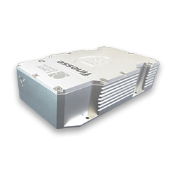 Laser Quantum provides several lasers and systems for carrier–envelope phase stabilisation, including the finesse pure CEP – an ultra low noise laser with direct pump modulation capabilities and powers between 4–16 W. |
| diode-pumped lasers |  Laser Quantum manufactures a wide range of diode-pumped solid-state lasers with wavelengths and powers from 473 to 1064 nm, 25 mW to 16 W. Laser Quantum guarantee exceptional reliability, compact size and long lifetimes, suitable for a large variety of applications. |
| femtosecond lasers | 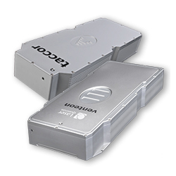 Laser Quantum specialise in femtosecond laser systems with ultra-short pulses and high repetition rates that offer unique capabilities and benefits to a wide variety of scientific applications. |
| frequency combs (equipment for generating …) |  Laser Quantum’s taccor comb consists of a 1-GHz turn-key Ti:sapphire laser with a matched dispersion compensation module, supercontinuum generation and ultra-stable f-to-2f interferometer. It provides an electrical output signal at the carrier-envelope offset (CEO) frequency with at least 40 dB signal-to-noise ratio in 100 kHz bandwidth. The supercontinuum generation fibre coupling is stable for long periods. |
| green lasers |  Laser Quantum offers 532 nm green lasers from 25 mW to 16 W, suitable for many applications including oscillator pumping (lasers are designed to exceed all requirements for noise sensitive applications such as CEP stabilisation). Other applications include Raman spectroscopy, microscopy, optical tweezing and fluorescence imaging. |
| high harmonic generation (equipment for …) | 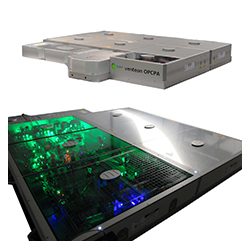 Laser Quantum manufacture the venteon OPCPA, a system that combines few-cycle pulse duration with a pulse energy in the μJ-regime at a high repetition rate, ideal for stable pulses to drive high harmonic generation applications. |
| high-power lasers |  Laser Quantum manufacturers both continuous wave and ultrafast lasers with high output power, such as the finesse laser family with output powers of up to 16 W. |
| laser applications | 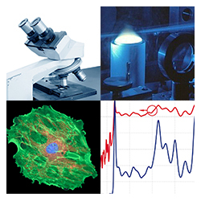 Laser Quantum's lasers are used in many different applications across industrial and scientific research and each is tailored to best suit the environment they are placed in. See some of Laser Quantum's laser applications described on our website. |
| laser spectroscopy (equipment for …) | 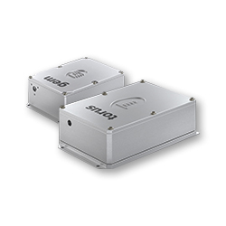 Laser Quantum manufacture continuous wave lasers and ultrafast laser systems for Raman Spectroscopy dual-comb spectroscopy, terahertz time-domain spectroscopy, and ultrafast time domain spectroscopy. |
| lasers |  Laser Quantum is a world-class manufacturer of high-quality diode-pumped solid-state and ultrafast lasers. |
| mode-locked lasers |  Laser Quantum are the manufacturers of the torus mode-locked SLM lasers, with patented active mode-locking technology to maintain the performance of the output beam, and a stable frequency output across wide temperature fluctuations and long measurement periods. |
| narrow-linewidth lasers | 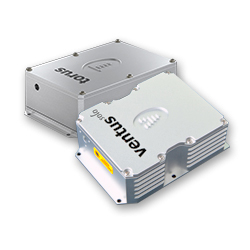 Laser Quantum offer a number of lasers with a narrow linewidth and high spectral purity, including the torus 532 and torus 660 mode-locked SLM lasers and the ventus solo, designed for high resolution Raman spectroscopy applications. |
| optical metrology (… equipment) |  Laser Quantum’s femtosecond lasers for metrology and frequency combs metrology and frequency combs have enabled optical frequency measurements with 20 significant figures, the highest accuracy demonstrated to date. Ultrafast laser offerings include the taccor, a turnkey femtosecond laser with 1 GHz repetition rates and 15 fs pulses, and the gecco, a low maintenance 84 MHz laser. |
| optical parametric chirped-pulse amplification (OPCPA light sources) | 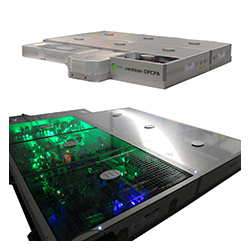 Laser Quantum manufacture the world's first commercially available OPCPA system. Generating a unique combination of few-cycle pulse durations and pulse energies in the μJ regime at high repetition rates, the system can be CEP stabilised without the need for additional spectral broadening. |
| optical tweezers | 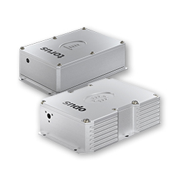 Laser Quantum provide a variety of lasers for optical tweezing / trapping applications. The opus, ventus and finesse lasers have a high degree of pointing stability and an M2 value close to unity, enabling a tight trap. Single mode fibre coupling options are also available for easy integration and enhance beam positioning. |
| pulsed lasers |  Laser Quantum has a wide variety of ultrafast lasers with short pulses and high repetition rates, each offering unique capabilities and benefits to suit the needs of different applications. |
| pump-probe measurements (equipment for pump-probe measurements) |  Laser Quantum provides a range of continuous wave and ultrafast laser solutions, including the ASOPS Engine, a system comprising of two taccor femtosecond lasers and a TL-1000 ASOPS off-set-lock for frequency stabilization, enabling two-colour pump-probe experiments. |
| Raman spectroscopy (equipment for …) | Laser Quantum manufacturers suitable lasers for Raman spectroscopy, including 473, 532, 660 & 671 nm wavelengths. The gem family is ideal for OEM integration, whilst ventus lasers are better suited to scientific and research applications. For higher resolution requirements, the ventus solo and torus lasers provide narrowed bandwidths and high stability mode-locking respectively. |
| red lasers |  Laser Quantum manufacture a wide range of 660 nm and 671 nm red lasers for applications such as DNA sequencing, FLIM, Raman imaging and for de-excitation in super resolution microscopy. |
| seed lasers |  Laser Quantum provides lasers and amplifier systems to meet different needs for amplifier seeding, including the low maintenance gecco, short-pulses of the venteon power, the OPCPA ready venteon dual and the CEP stabilised venteon CEP5. |
| single-frequency lasers |  Laser Quantum manufacturers of torus mode-locked SLM lasers 532 and 660 nm lasers with active mode-locking to maintain a stable frequency output and output beam performance across long measurements and temperature fluctuations. |
| solid-state lasers | 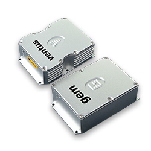 Laser Quantum manufactures a wide range of diode-pumped solid-state lasers with wavelengths and powers from 473 to 1064 nm, 25 mW to 16 W. Laser Quantum guarantee exceptional reliability, compact size and long lifetimes, suitable for a large variety of applications. |
| THz sources | 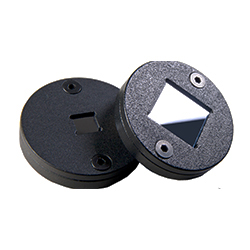 Laser Quantum offer a range of THz emmiters.The Tera-SED is a planar large-area GaAs based photo-conductive emitter for impulsive generation of broad-band terahertz (THz) radiation. |
| titanium-sapphire lasers |  Laser quantum manufacture a wide range of lasers for Ti:sapphire pumping with different products to suit the requirements of the end-user. The gem is a compact laser with a range of wavelengths, the opus offers exceptionally low noise, and the finesse is available at up to 16 W, with ultra-low noise and CEP options available. |
| tunable lasers | 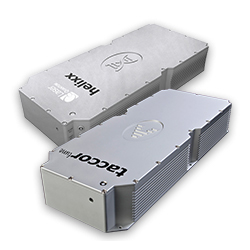 Many of Laser Quantum’s ultrafast lasers can be tuned to different wavelengths for various scientific applications, ranging from 720 nm – 930 nm to meet the specific needs of the application. Products include the taccor tune with touch-screen beam control, and the helixx with a unique 250 MHz repetition rate. |
| ultrafast amplifiers |  Laser Quantum provides comprehensive solutions for the emerging market of OPCPA technology – the most direct approach for high-power, few-cycle femtosecond laser amplification, in addition to preamplifier modules for laser systems. |
| ultrafast lasers |  Laser Quantum specialise in ultrafast laser systems with short pulses and high repetition rates, offering unique capabilities and benefits to a wide variety of scientific applications. |
| YAG lasers |  Laser Quantum is a world-class manufacturer of high-quality diode-pumped solid-state lasers and ultrafast lasers. Laser Quantum’s products are known for their reliability, compactness, performance-excellence and long operational lifetimes. Laser Quantum products can be found in laboratories and integrated into systems and machines worldwide, spanning a large variety of scientific applications. |
| yellow and orange lasers | Laser Quantum manufactures 561 nm yellow lasers used for biomedical imaging and cytometry. These applications require lasers that are both robust and reliable, whilst providing flexible control and high-quality beam characteristics. |
Information of Laser Quantum Appears on the Following Pages
Company profile (this page)
Pages with Suppliers for Products
blue lasers, carrier-envelope offset, diode-pumped lasers, femtosecond lasers, frequency combs, green lasers, high harmonic generation, high-power lasers, laser applications, laser spectroscopy, lasers, mode-locked lasers, narrow-linewidth lasers, optical metrology, optical parametric chirped-pulse amplification, optical tweezers, pulsed lasers, pump-probe measurements, Raman spectroscopy, red lasers, seed lasers, single-frequency lasers, solid-state lasers, THz sources, titanium-sapphire lasers, tunable lasers, ultrafast amplifiers, ultrafast lasers, YAG lasers, yellow and orange lasers
Encyclopedia Articles
blue lasers, carrier-envelope offset, diode-pumped lasers, femtosecond lasers, frequency combs, green lasers, high harmonic generation, high-power lasers, laser applications, lasers, mode-locked lasers, narrow-linewidth lasers, optical metrology, optical parametric chirped-pulse amplification, optical tweezers, pulsed lasers, pump-probe measurements, red lasers, seed lasers, single-frequency lasers, solid-state lasers, titanium-sapphire lasers, tunable lasers, ultrafast amplifiers, ultrafast lasers, YAG lasers, yellow and orange lasers
Profiles of Other Suppliers
Laser Quantum is shown as alternative supplier on 329 pages of other suppliers not having an ad package.
Other Pages
On various pages, a banner can randomly show up which displays a random selection of logos of suppliers with an ad package.